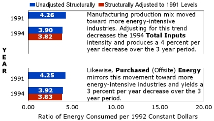
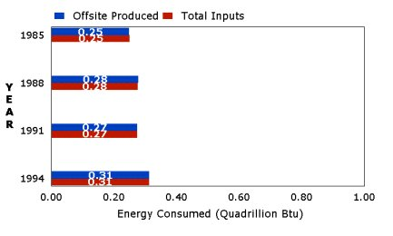

|
This major group includes establishments engaged in performing any of the following operations: (1) preparation of fiber and subsequently manufacturing of yarn, thread, braids, twine, or cordage; (2) manufacturing broadwoven fabrics, narrow woven fabrics, knit fabrics, and carpets and rugs from yarn; (3) dyeing and finishing fiber, yarn, fabrics, and knit apparel; (4) coating, waterproofing, or otherwise treating fabrics; (5) the integrated manufacture of knit apparel and other finished articles from yarn; (6) the manufacture of felt goods, lace goods, nonwoven fabrics, and miscellaneous textiles. If you found this information useful, please try... |
 Source: Table 12 of this report.  |
 Top of Page
Top of Page
 Energy
Intensity Page
Energy
Intensity Page
File Last Modified: 8/25/98
http://www.eia.gov/emeu/mecs/mecs94/ei/ei_22.html

If you are having any technical problems with this site, please contact the EIA Webmaster at wmaster@eia.doe.gov